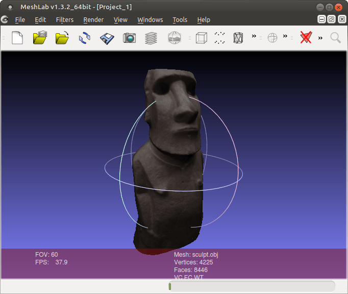

2015-06-23 - Nº 8
Editorial
A 8ª Newsletter é editada a partir do Sul do país já em ritmo de férias.
Esta Newsletter encontra-se mais uma vez disponível no sistema documenta do altLab. Todas as Newsletters encontram-se indexadas no link.
Esta Newsletter tem os seguintes tópicos:
- Novidades da Semana
- Ciência e Tecnologia
- Cursos MOOC
- Modelos 3D
- Open Source
- Circuitos
- Compras
- Ferramentas
Nesta Newsletter apresentamos um circuito que permite com um único pino controlar vários botões sem recorrer a mais integrados. A ferramenta Open Source da semana é o Meshlab que permite otimizar modelos 3D. Para finalizar falaremos de berbequins.
 João Alves ([email protected])
João Alves ([email protected])
O conteúdo da Newsletter encontra-se sob a licença  Creative Commons Attribution-NonCommercial-ShareAlike 4.0 International License.
Creative Commons Attribution-NonCommercial-ShareAlike 4.0 International License.
Novidades da Semana ^
-
"Jaguar Land Rover has revealed some of the prototype technologies that its UK-based research team are developing to deliver autonomous driving in the future. A Remote Control Range Rover Sport research vehicle demonstrates how a driver could drive the vehicle from outside the car via their smartphone. The smartphone app includes control of steering, accelerator and brakes as well as changing from high and low range. This would allow the driver to walk alongside the car, at a maximum speed of 4mph, to manoeuvre their car out of challenging situations safely, or even to negotiate difficult off-road terrain."
-
"News: a new modern editor, serial monitor stays open while you upload a new sketch, new "Open Recent" menu, and tons of fixes and improvements: the list is available here. They are 470 issues closed since previous version"
-
"Two and a half years ago, I found myself sitting in a car with Eben Upton about three days into my new job at Raspberry Pi. We discussed – among other things – everything we wanted to do with the Raspberry Pi hardware and with the products around the Pi. One of the things we discussed was an official Raspberry Pi case. We thought that it would be great to create something affordable, but with the kind of real beauty and design that our products try to encompass."
Ciência e Tecnologia ^
New Printing Process Makes Three-dimensional Objects Glow
"Conventional electroluminescent (EL) foils can be bent up to a certain degree only and can be applied easily onto flat surfaces. The new process developed by Karlsruhe Institute of Technology (KIT) in cooperation with the company of Franz Binder GmbH & Co. now allows for the direct printing of electroluminescent layers onto three-dimensional components. Such EL components might be used to enhance safety in buildings in case of power failures. Other potential applications are displays and watches or the creative design of rooms. The development project was funded with EUR 125,000 by the Deutsche Bundesstiftung Umwelt (German Foundation for the Environment)."
Nanometer-Sized Robots Can Now Take Colon Biopsies
"Researchers have invented a non-invasive way for thousands of nanometer-sized robots to perform tissue biopsies. Developed by Professor David Gracias at Johns Hopkins University, these starfish-shaped robots are able to enter the body, collect a minuscule tissue sample, then be extracted by a doctor. These tiny devices are made of materials that react to things like temperature, pH level, and even certain enzymes. Once this material comes into contact with its designated stimuli, it reacts and changes shape, essentially allowing the tiny robot to “grab” a small piece of tissue."
High-Performance Robotic Muscles from Conductive Nylon Sewing Thread
"Natural muscles exhibit high power-to-weight ratios, inherent compliance and damping, fast actuation and high dynamic ranges. Unfortunately, traditional robotic actuators have been unable to attain similar properties, especially in a slender muscle-like form factor. Recently, super-coiled polymer (SCP) actuators have rejuvenated the promise of an artificial muscle. Constructed from commercial nylon fishing line or sewing thread and twisted until coils form, these lightweight actuators have been shown to produce significant mechanical power when thermally cycled. In this paper, we develop a thermomechanical and thermoelectric model of SCP actuators, and examine their controllability. With off-the-shelf conductive sewing thread, we show the ability to produce controlled forces in under 30 ms, exceeding human muscle performance. Finally, we use SCP actuators in a robotic hand to demonstrate their applicability as a low-cost, high performance robotic muscle."
Cursos MOOC ^
- Cracking Mechanics: Further Maths for Engineers - Começa a 6 de Julho
- An Introduction to Interactive Programming in Python (Part 2) - Começa a 11 de Julho.
- Introduction to Cyber Security - Começa a 13 de Julho
- Creative Coding - Começa a 3 de Agosto.
Modelos 3D ^
Com a disponibilidade de ferramentas que permitem dar azo a nossa imaginação na criação de peças 3D e espaços como o thingiverse para as publicar, esta rubrica apresenta alguns modelos selecionados que poderão ser úteis.
Mini Drill Press for Hobby Drill (http://www.thingiverse.com/thing:144333)
A miniature drill press for hobby style drills.
Ideal for drilling holes in PCBs.
http://youtu.be/6TpeNm8IX6g
The included tool mounts are designed to fit a RotaCraft RC18 Hobby Drill. It should be fairly easy to design mounts to fit other hobby drills.
Update: I should have mentioned that I included the original thumb-wheel scad/stl just in case. I replaced it with the arm as I found the thumb-wheel hard to use.
Handle for Hex Drill Bits, Etc. (http://www.thingiverse.com/thing:725267)
Built this so I could easily use hex ended drill bits for enlarging holes in my prints or just to use as a hand drill.
Hex fit is snug.
Printed sitting on open end with no supports.
Vise (http://www.thingiverse.com/thing:745649)
It's a small vise, but it works ;)
You just added a dot of glue on axis although it does not move :)
Print on Ultimaker² whit Colorfabb (black) and Formfutura (red)
Layers : 0.2mm Speed : 40mm/s
Open Source ^
Meshlab
A aplicação open source da semana é o Meshlab. Trata-se de uma ferramenta que permite processamento e a edição de objectos 3D. Começou a ser desenvolvida no Visual Computing Lab do ISTI-CNR em 2005 por um grupo de estudantes. O desenvolvimento é ativamente suportado pelo projeto 3D-CoForm. A última versão é a 1.3.3 de Abril de 2014. O Meshlab encontra-se alojado no sourceforge

O Meshlab tem as seguinte funcionalidades:
- Seleção interativa e eliminação de partes da rede. Mesmo em modelos grandes
- Interface de pintura para selecionar, suavizar e colorir as redes
- leitura e escrita de diversos formatos 3D:
- importação de: PLY, STL, OFF, OBJ, 3DS, COLLADA, PTX, V3D, PTS, APTS, XYZ, GTS, TRI, ASC, X3D, X3DV, VRML, ALN
- exportação de: PLY, STL, OFF, OBJ, 3DS, COLLADA, VRML, DXF, GTS, U3D, IDTF, X3D
- Suporte para Point Clouds. Ficheiros 3D que apenas são compostos por pontos são suportados em formatos PLY e OBJ.
- Suporte U3D; O Meshlab é a primeira ferramenta open source que disponibiliza suporte direto para converter rede 3D em formato U3D. Agora é possível criar PDFs, apenas com o Meshlab e o LaTex.
- Filtros de limpeza:
- remoção de vértices duplicados, não referenciados e faces nulas.
- remoção de pequenos componentes isolados
- unificação normal, coerente e trocada.
- limpeza de faces non-manifold.
- enchimento automático de buracos
- Filtros de remalhagem (remeshing):
- simplificação de alta qualidade de colapsação de bordas
- Reconstrução de superfícies a partir de pontos
- Subdivisão de superfícies (ciclo e borboleta)
- manutenção de suavização e filtros de correção
- Enchimento de buracos
- Vários filtros de pintura/inspeção:
- Curvatura Gaussiana e Mediana
- pontas das bordas, distância geodésica, a partir das bordas
- pontas sem 2 "manifolds" e vértices
- faces auto-intersectadas.
- oclusão de ambiente
- Pintura de rede interativa:
- Pintura de Cor
- Seleção de pintura
- Suavização
- Ferramenta de medição.
- Ferramenta de corte
- Ferramentas de digitalização 3D:
- Alinhamento ICP baseado em mapas de intervalos
- Junção de multiplas redes através da reconstrução da superficie "Poisson"
- renderização baseada no Shader OpenGL
- renderização Grande (até 16k x 16k) para impressão de alta qualidade.
- Sistema de histórico de comandos pode ser re-executado em redes diferentes ou gravado.
- Arquitetura de Plugins extensíveis, permitindo criar novas funções para tratamento de redes, filtros de pintura e suporte para outros formatos de ficheiros.
Links úteis:
- Using Meshlab to Clean and Assemble Laser Scan Data
- How to Create an STL file from a XYZ file in MeshLab
- Poisson Surface Reconstruction
- How to make a model for 3D printing
- Polygon Reduction with Meshlab
Circuitos ^
Aqui é apresentado um circuito simples que poderá ser construído com componentes.
botões e mais botões
Iremos apresentar várias formas de utilizar botões como entradas para um circuito. O estado de um botão é a forma mais básica da lógica binária ou está aberto ou está fechado, no entanto quando se monta um circuito tem que se ter em atenção que devemos ter sempre um valor esperado no circuito. Por este motivo é necessário usar resistências de pull-up ou pull-down.
As resistências de pull-up são resistências usadas em circuitos lógicos que asseguram que existe um valor conhecido em qualquer momento num circuito. Um circuito lógico pode ter três estados lógicos: alto, baixo e flutuante (ou alta impedância). Este último estado ocorre quando um pino não é puxado para um nível alto ou baixo, e é deixado num estado de flutuação. Um bom exemplo disto é um pino de entrada de um micro-controlador que não se encontre ligado. Isto provoca resultados imprevisíveis e para ultrapassar esta situação são usadas resistências de pull-up. Estas resistências são idênticas às demais sendo usadas para este fim específico. Um valor típico de resistência de pull-up é 10k Ohms, mas pode variar de acordo com o circuito ou objectivo. Por oposição às resistências de pull-up existem as de pull-down que em vez de puxarem o estado de um circuito para a tensão de referência positiva (ex: 5V) puxam para a tensão negativa (ex: GND).
O valor correto da resistência é limitado por dois fatores. A dissipação de potência e a tensão. Se o valor foi demasiado baixo, uma corrente alta passará pela resistência gastando energia e produzindo calor desnecessariamente. O segundo fator é a voltagem do pino quando o pull-up entra em ação. Se o valor for demasiado alto, combinado com uma fuga de corrente do pino de entrada, a tensão de entrada pode ser insuficiente quando o circuito está aberto. Como regra, o valor da resistência deverá ser 10 vezes menor que o valor da impedância do pino de entrada. Em circuitos a operar com tensões de 5V um valor de pull-up costuma ser entre 1k e 10k Ohms.
O terceiro circuito apresenta uma forma de ler múltiplos botões a partir de uma entrada analógica. O principio usado é o da divisão de tensão usada pelas resistências. A cada botão estão associadas um número diferente de resistências e logo uma tensão diferente.
Esquemático
Nota: Os circuitos apenas apresentam a parte dos botões. A ligação com o micro-controlador está definida no sketch. O circuito para o CSEduino pode ser consultado no Artigo do Maker da Newsletter Nº5. Pode igualmente ser usado um Arduino.
Componentes (BOM):
- 10x SPST (Switch)
- 9x Resistências de 1K Ohms (R3-R11)
- 2x Resistências de 10K Ohms (R1-R2)
Código
O Sketch usado foi o seguinte:
/*
Pinos usados:
A0 - Pino analógico
D2 - Botão Pull-up
D3 - Botão Pull-Down
*/
const int buttonsPin = A0;
const int puPin = 2;
const int pdPin = 3;
#define btn1 1
#define btn2 2
#define btn3 3
#define btn4 4
#define btn5 5
#define btn6 6
#define btn7 7
#define btn8 8
#define btnNONE 0
int readButtons() { // read the buttons
int r = btnNONE;
int adc_key_in = analogRead(buttonsPin);
// if (adc_key_in!=0)
// Serial.println(adc_key_in);
if (adc_key_in > 560) r = btn8;
if (adc_key_in > 590) r = btn7;
if (adc_key_in > 630) r = btn6;
if (adc_key_in > 675) r = btn5;
if (adc_key_in > 725) r = btn4;
if (adc_key_in > 780) r = btn3;
if (adc_key_in > 850) r = btn2;
if (adc_key_in > 925) r = btn1;
//...
return r; // when all others fail, return this.
}
void setup() {
pinMode(puPin, INPUT);
pinMode(pdPin, INPUT);
pinMode(buttonsPin, INPUT);
Serial.begin(9600);
}
void loop() {
int button = readButtons();
Serial.print("B1: ");
Serial.print(digitalRead(puPin));
Serial.print(", B2: ");
Serial.print(digitalRead(pdPin));
Serial.print(", BM: ");
Serial.println(button);
}
Os botões estão codificados em intervalos. A função readButtons devolve o valor do botão lido ou btnNONE caso não esteja nenhum premido.
Links Úteis:
Compras ^
Artigos do ebay ou de outras lojas online que poderão ser úteis em projetos.
UNO R3 ATmega328P Board + 2.4 Inch TFT LCD Touch Screen Module For Arduino
UNO R3 board is 100% compatible with original Arduino, now it has perfect quality and performance . Arduino is an open-source physical computing platform based on a simple i/o board and a development environment that implements theProcessing/Wiring language. Arduino can be used to develop stand-alone interactive objects or can be connected to software on your computer (e.g. Flash, Processing, MaxMSP). The open-source IDE can be downloaded for free (currently for Mac OS X, Windows, and Linux). This is the new Tosduino Uno R3. In addition to all the features of the previous board, the Uno R3 now uses an ATmega16U2 instead of the ATmega8U2 chip. This allows for faster transfer rates, no drivers needed for Linux or Mac (inf file for Windows is needed), and the ability to have the Uno show up as a keyboard, mouse, joystick, etc.
Note:
The TOSduino Uno R3 requires the Arduino 1.0 drivers folder in order to install properly on some computers. We have tested and confirmed that the R3 can be programmed in older versions of the IDE. However, the first time using the R3 on a new computer, you will need to have Arduino 1.0 installed on that machine. The small chip is ATmega16U2, the 28 pin DIP socket chip is ATmega328-pu.
2.4 Inch TFT LCD Touch Screen Module: Features:
2.4 inch LCD TFT display - Bright, 4 white-LED backlight, on by default but you can connect the transistor to a digital pin for backlight control - Colorful, 18-bit 262,000 different shades - 4-wire resistive touchscreen - 240 x 320 resolution - Spfd5408 controller with built in video RAM buffer - 8 bit digital interface, plus 4 control lines - Uses digital pins 5-13 and analog 0-3. That means you can use digital pins 2, 3 and analog 4 and 5. Pin 12 is available if not using the micro SD - 5V compatible, use with 3.3V or 5V logic - Size: 71 x 52 x 7mm
4pin 100pcs Tactile Push Button Switch Momentary Tact 6x6x5mm DIP Through-Hole
(http://www.ebay.co.uk/itm/221342781813) - £0.99
Description:
- 100% brand new and high quality
- Feature momentary contact, 4 pins, round black push button, through hole mounting, 6 x 6 x 5mm size, etc.
- Used in the fields of electronic products, household appliances and more.
- High precision mechanism design offers acute operation and long service life.
Specification:
- Size: Approx.6x6x5mm
- Temperature: -25°~+-85°C
- Rated Load: DC12V 0.1A
- Contact Resistance: ≤ 0.03Ω
- Withstand Voltage: AC250 V (50Hz) /MIN
- Actuation Force: 1.3+-0.5N
- Lnsulation Resistance: ≥100MΩ
- Life：100000 times
- Color: as the picture show
- Quantity: 100pcs
Perfect 400 Contact Tie-Point Mini Electronic Test Deck Prototype Breadboard
(http://www.ebay.co.uk/itm/361271363451) - US $1.84
This mini universal solderless breadboard is composed of ABS plastic and tin phosphorus plated bronze contact chips, it has 400 contacts tie-points available. It can work with 20-29AWG wire, perfect for circuit prototype design.
Type: Mini Solderless Breadboard Model: BB-801 Available Contacts Tie-points: 400 Material: ABS Plastic & Tin Phosphorus Plated Bronze Contact Chip Voltage: 300V Electric Current: 3-5A Features: 400 Contact Tie-points Available, Mini Universal Solderless Breadboard Size: 5.5cm x 8.2cm x 0.85cm/2.17'' x 3.23'' x 0.33'' (Approx.)
Package Includes: 1 x Mini Solderless Breadboard
Ferramentas ^
As Ferramentas que usamos no dia-a-dia explicadas ao detalhe.
Berbequim
O Berbequim é uma ferramenta que conjuntamente com uma broca ou um bit permite que estes rodem no sentido de aparafusar ou de desaparafusar a velocidades variáveis.
Este tipo de ferramenta apresenta-se em diversas formas que possibilitam diversos tipos diferentes de trabalhos:
- Arco de Pua - pode ser usado em qualquer circunstância uma vez que não requer electricidade. Atendendo a que apenas usa a força humana produz muito pouco ruído.
- Berbequim elétrico em formato pistola - Requer electricidade mas têm um motor elétrico que permite produzir mais rotação na broca. Os mais recentes têm a função de rotação inversa e de aumento progressivo da velocidade.
- Berbequim com função martelo - este tipo de berbequim além da função rotativa inclui uma função que permite aumentar a capacidade de perfuração em materiais muito rijos como betão.
- Berbequim de martelo industrial - é usado para perfurar betão com muita espessura
- Berbequim elétrico sem fio
- Berbequim de coluna - Permite fazer furos na vertical com bastante precisão
Para furarem o material é necessário recorrer a brocas. Estas existem de diferentes formatos e são tipicamente feitas em materiais específicos que se desgastam mais lentamente que o material que se está a furar.
Nome das partes de uma broca:
Tipos de brocas:
- Brocas de metal
- Brocas de 3 bicos para madeira
- Brocas de betão
- Brocas chatas em forma de pá
- Chave cruzeta para aparafusar/desaparafusar
- Cranianas
- Brocas para azulejos ou vidro
Existem variantes quer em termos de materiais em que são construídas quer em termos de formato e tamanho destas brocas para que se ajustem melhor ao material que estão a cortar.
Dica:
Para que se consigam fazer buracos de uma profundidade especifica pode-se usar um limitador de broca - este é aparafusado na broca e permite estabelecer logo o limite a que esta deve perfurar.
Para mais informações:
- TERMINOLOGIA DAS BROCAS E CARACTERÍSTICAS DE USINAGEM
- The Power Drill: A Modern Man’s Guide to Tools
- Manuais
That's all Folks!